A community app designed to enhance relationships between street cats and local residents — built from personal empathy and validated through user research.
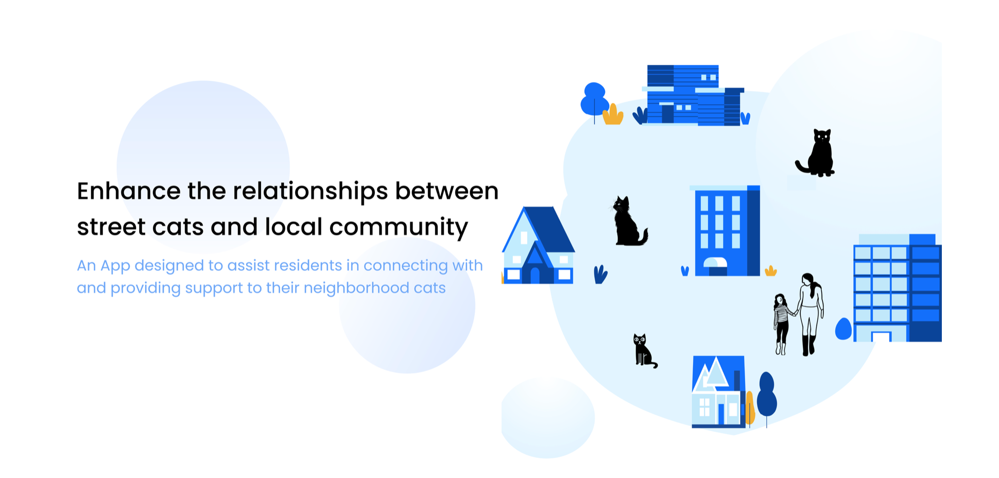
For my thesis project at the California College of the Arts (Spring 2024), I designed an app that helps people know more about the street cats in their community — and collectively take care of them. The project includes a poster, an animated intro video, a brochure, and a fully prototyped mobile app accessible via QR code.
I'm a cat person. I noticed that there are so many street cats in my neighborhood — and many neighbors feel the same connection. But we don't know these cats well. We don't know their names, health status, or how to coordinate care.
In many U.S. neighborhoods, street cats are a common presence — often roaming without adequate food, shelter, or healthcare. Unlike pets, most street cats cannot be placed for adoption — they need a different kind of community-scale solution.
I conducted structured interviews with 5 participants representing a range of engagement levels with street cats — from casual observers to regular feeders. The goal was to surface their motivations, concerns, and unmet needs around neighborhood cat interaction.
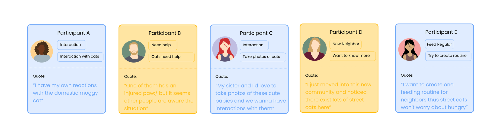
I explored multiple formats — posters, community boards, websites. A mobile app emerged as the ideal solution because it uniquely satisfies the user's core needs: convenience, real-time notifications, and dynamic information across many scenarios.
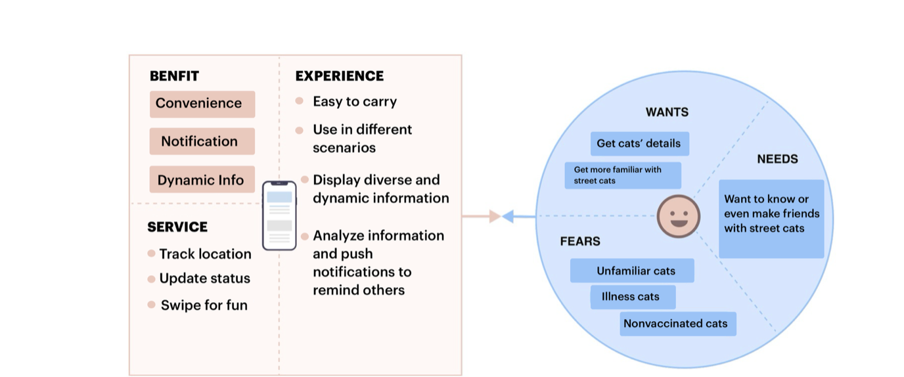
I built a primary persona — Jessica, a programmer who just moved to Skyline Community. She's a cat lover but feels uncertain about approaching unfamiliar street cats. Her journey from discovery to delight maps the full emotional arc the app is designed to support.
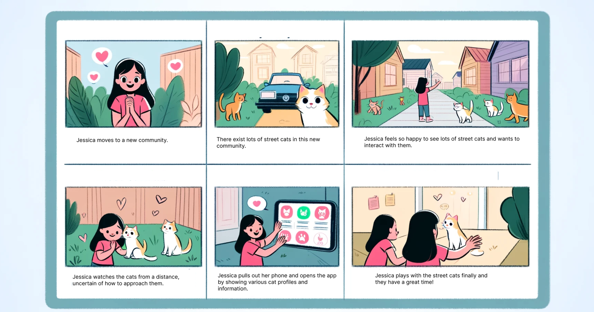
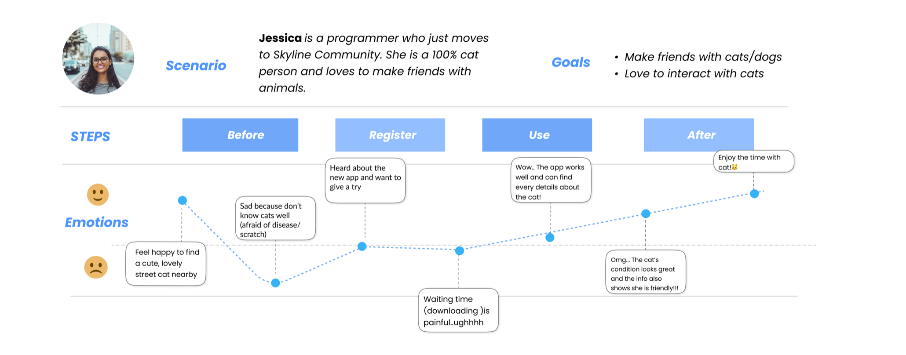
Based on research insights, I mapped the app's information architecture into four primary flows: Browse Cat Profiles, Add Details, Catzone Community, and Specific Cat Profile. Wireframes were drawn for each screen before any visual design began.
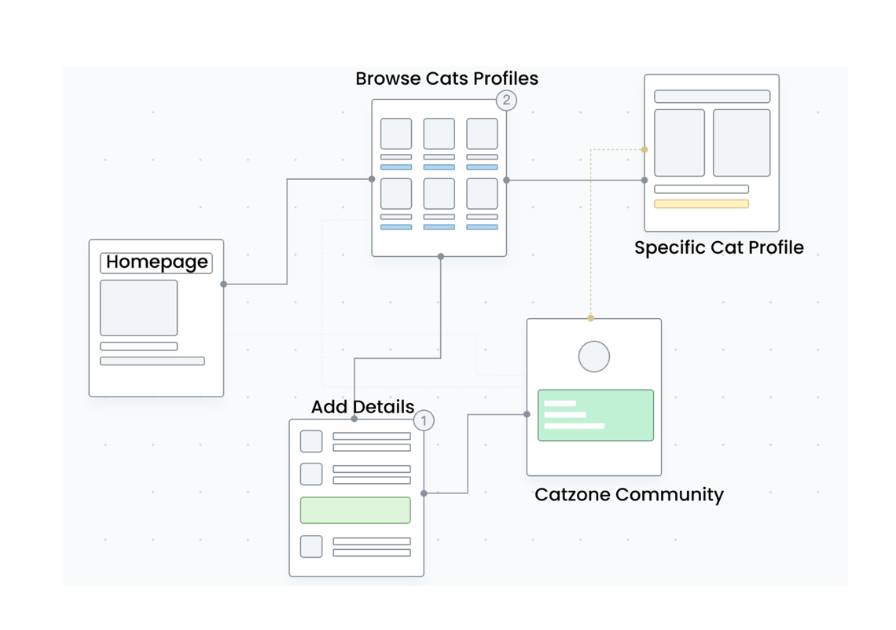
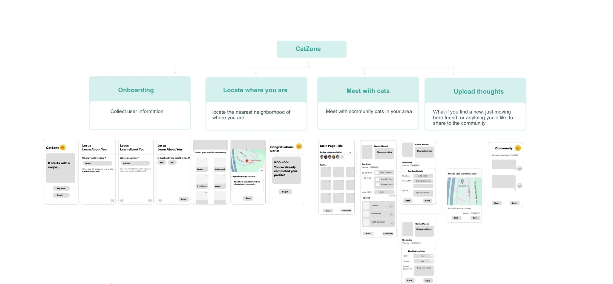
The Catzone design system uses a soft, approachable palette — blues and teals for trust and community, warm amber and rose for warmth and care. Typography is set in Poppins for its rounded, friendly character. Designed in Figma with Photoshop for image treatment.
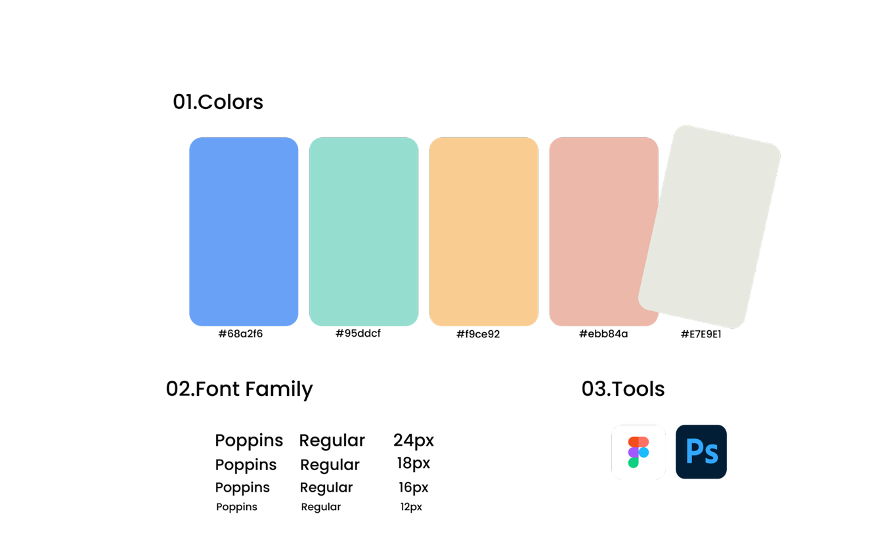
The final high-fidelity design covers 4 core experiences — onboarding with interactive animation, cat profile browsing, community engagement, and precise GPS location. Each screen is crafted to reduce friction and make caring for street cats feel effortless and rewarding.
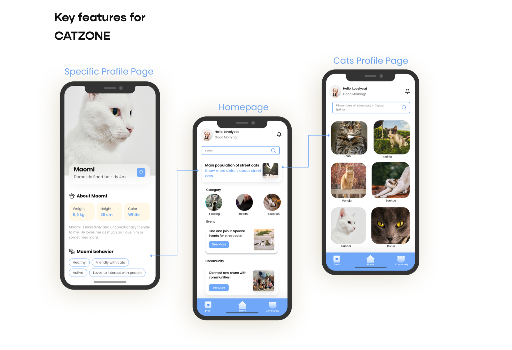
A three-screen onboarding sequence — the splash screen introduces the brand concept, then two onboarding slides build emotional context before the user enrolls and enters the app.
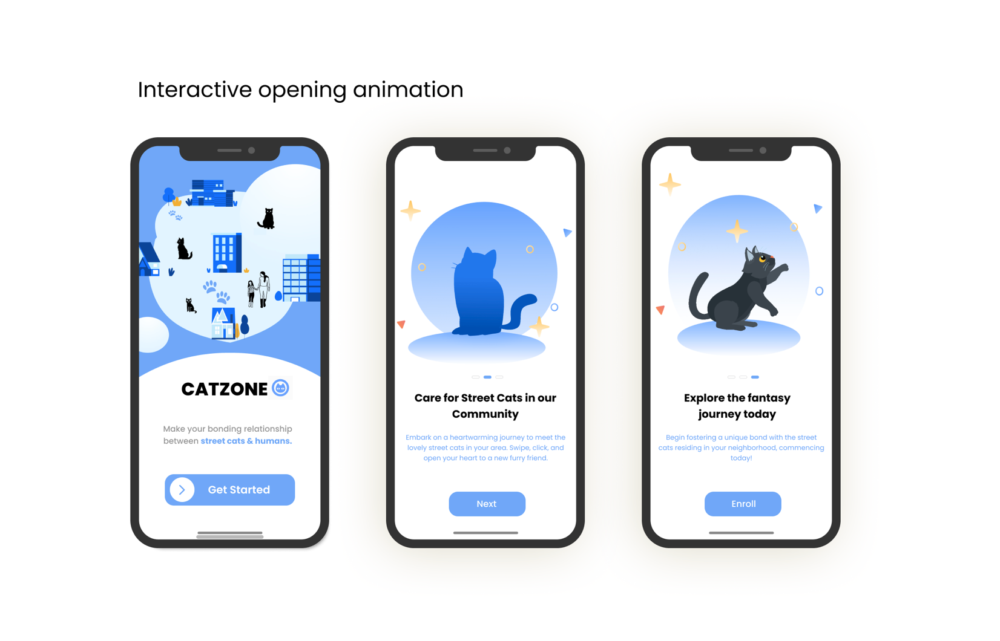
The full app spans onboarding, the cat profile grid, and the community hub — all designed with a clean, blue-dominant visual language that communicates trust and approachability.
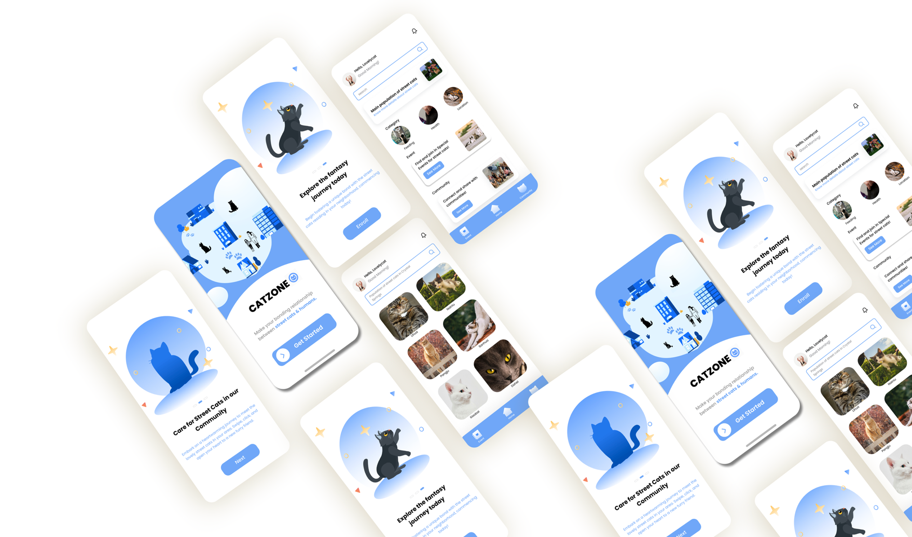
Each cat gets a detailed profile card — name, breed, age, weight, height, color, personality traits, and a full behavioral description. Community-maintained and always up to date.
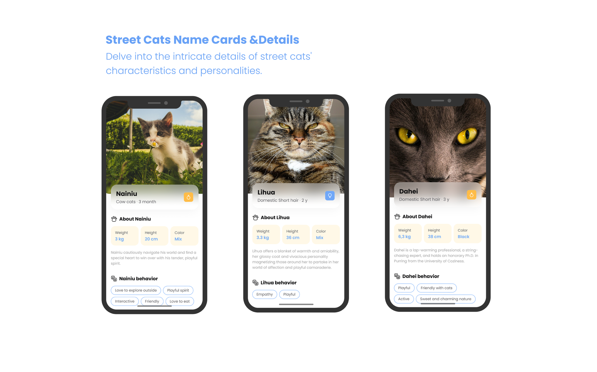
Residents can log upcoming events (vet visits, vaccinations), upload feeding records with water, food, and snack breakdowns, and the system automatically scores the cat's daily feeding health.
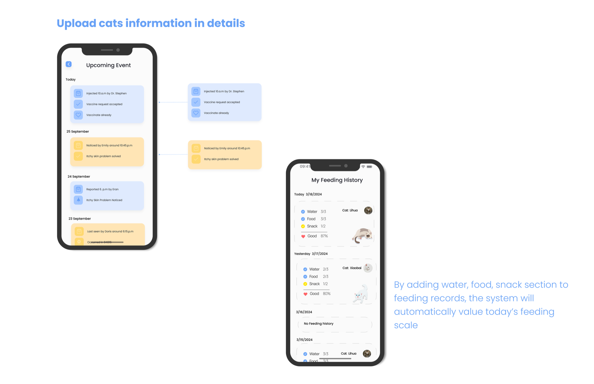
Users who care for street cats connect through a community feed and curated event listings — sharing posts, exchanging feeding tips, and discovering local events around cat care and welfare.
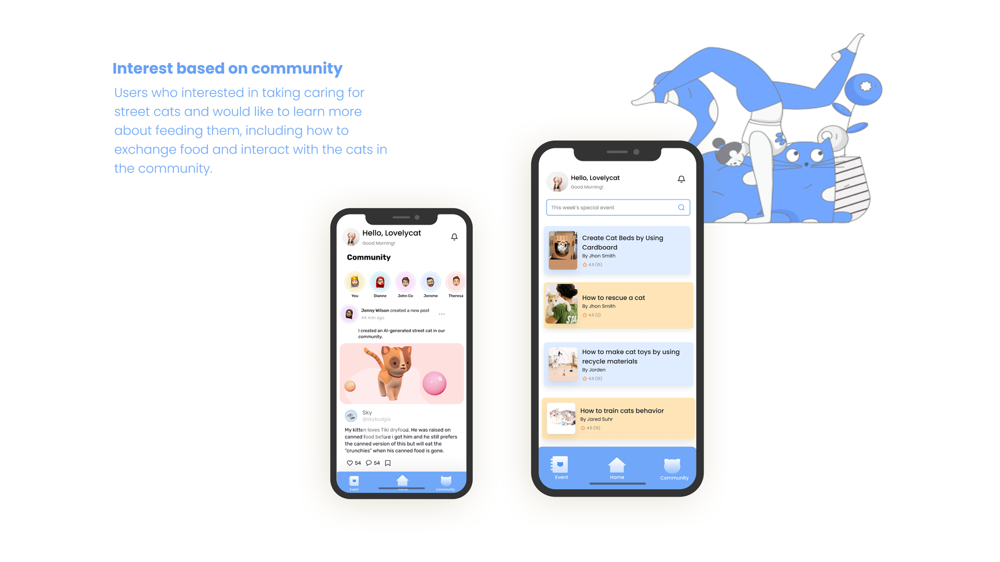
The app locates the user's position and maps nearby street cat sightings — showing distance, direction, and a navigation path to the nearest cat. Each cat appears with their profile pin.
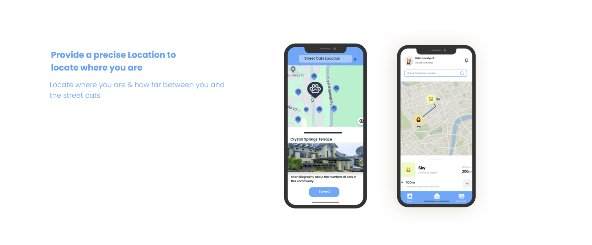